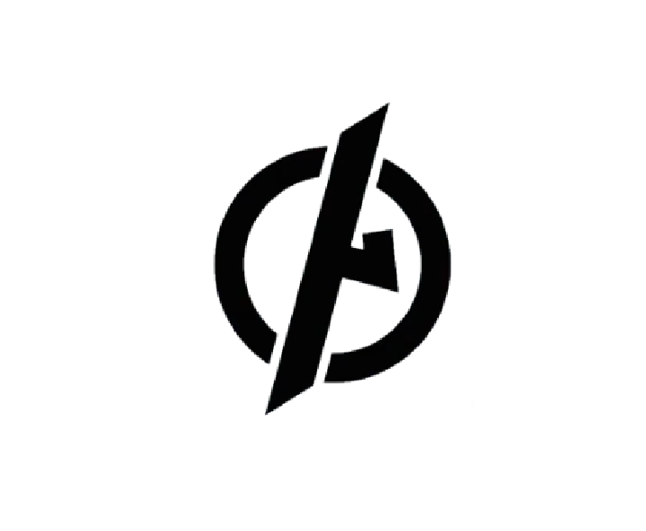

*Content warning: this challenge involves a symbol used by hate groups, and some sources surfaced during research contain hateful content.* This is the logo of an international far-right fashion brand. It includes a symbol that means a lot to the far right but also has historical and mainstream usage — the kind of thing you might have seen on emblems and statues in entirely non-hateful contexts. **What is the name of the symbol used in this logo?**
